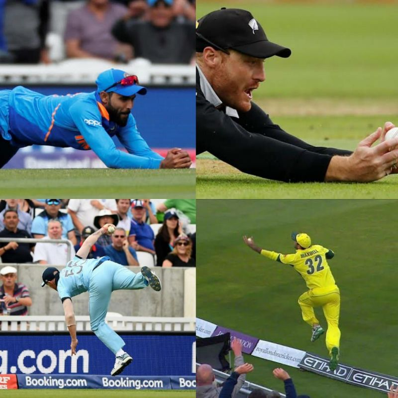
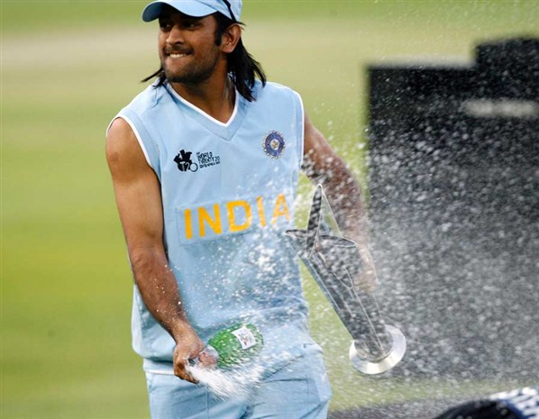

IPL
The Indian Premier League is a professional Twenty20 cricket league in India contested during March or April and May of every year by eight teams representing eight different cities in India.
TRY OUT

ODI
A One Day International is a form of limited overs cricket, played between two teams with international status, in which each team faces a fixed number of overs, usually 50.
TRY OUT

T20
Twenty20 cricket or Twenty-20, is a shortened format of cricket. At the professional level, it was originally introduced by the England and Wales Cricket Board in 2003 for the inter-county competition.
TRY OUT